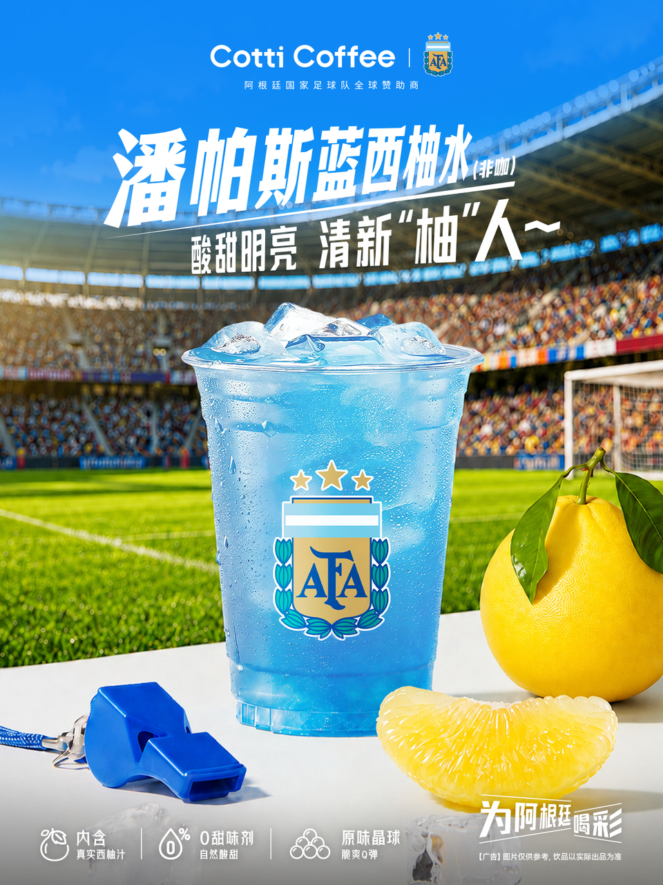
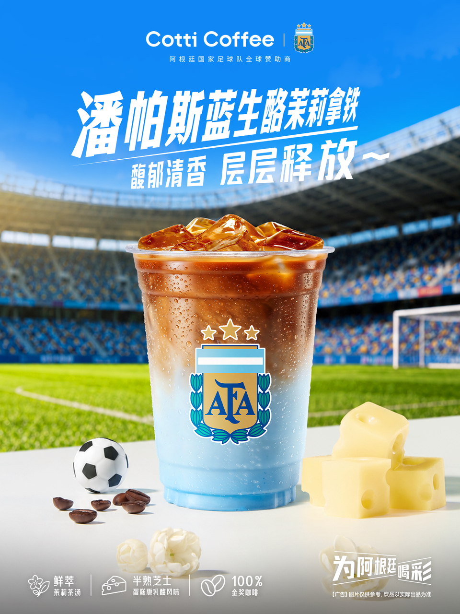
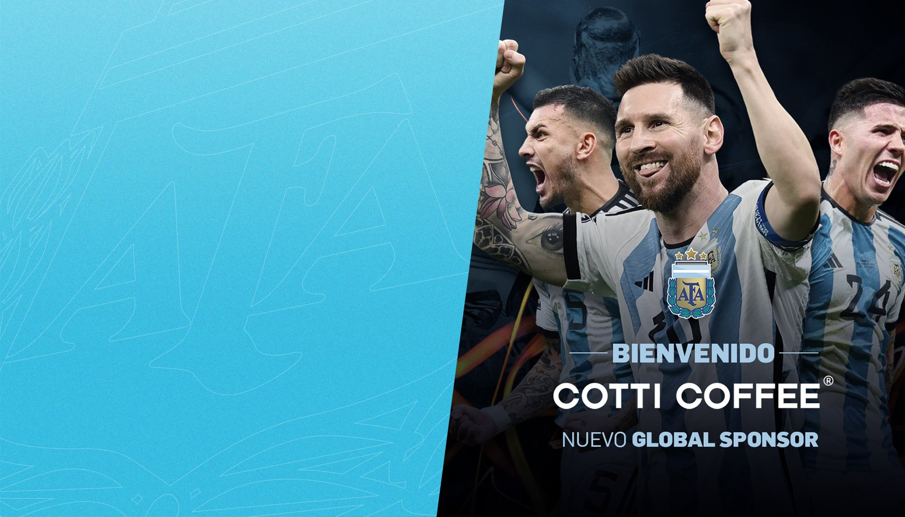

案例发生了什么



库迪把阿根廷国家队全球赞助身份落到“潘帕斯蓝”饮品、球队主题包材与运动周边，让球队归属进入门店的高频交易。
CASE TAKEAWAY
案例启示
关键动作
- 用“潘帕斯蓝”把球队代表色直接翻译成产品视觉和命名。
- 让球员阵容、饮品、主题包材与水杯毛巾在同一主海报里形成商品矩阵。
- 用高频咖啡消费承接国家队长期合作，而不只停在宣官。
传播与商业机制
传播路径
以“阿根廷国家队全球赞助 / 联名产品”为资源起点，进入球星/球队/授权内容、电商、门店、大小屏与海外渠道，让赛事权益转化为用户可接触、可讨论或可参与的内容。
商业承接
不把曝光直接等同销售，重点观察搜索、到店、商品成交、会员沉淀与重点海外市场认知，并区分品牌自报、平台数据与可独立核验结果。
可复用的方法咖啡品牌使用国家队权益时，最有效的翻译不是再做一张祝福海报，而是让队色、产品和可带走的物料同时进入订单。
适用条件、风险与证据
- 先明确目标是国内动销、出海认知、渠道关系还是授权商品，而不是全部都做。
- 球星或球队的赛果只是放大器，必须准备常态内容和转化出口。
- 对授权范围、地域、肖像和商品库存建立可追溯台账。
证据台账可将已核动作作为内部判断基础；涉及投放规模、销售结果或合作细则时，仍应以品牌、平台或权利方的一手发布为准。 当前记录：已核（AFA 官网 + 库迪官方微博留存）；素材状态：已归档 4 张品牌联名产品与 AFA 官方公告图。
品牌与权威来源物料
这里只展示可追溯到品牌、权利方、官方账号或明确注明原始出处的真实物料；研究图卡不计入案例图片。

EVIDENCE LEDGER
官方资料、结果口径与下一步
已验证事实
- 阿根廷足协官网记录：库迪 2022 年首先成为阿根廷国家队中国区合作伙伴，2023 年 6 月升级为全球赞助商与国家队官方咖啡品牌。
- 2026 年 6 月 15 日，库迪官方微博发布“出征世界杯，为雄鹰喝彩”联名上新，包含潘帕斯蓝饮品、球队主题包装、运动水杯与毛巾。
- 本页归档 3 张库迪官方微博联名产品图和 1 张 AFA 全球赞助公告图，不再用咖啡品牌“德比”的二次视频截图代替品牌行动。
可追溯结果口径
- 官方发布可验证合作身份、产品与包装动作；尚未取得联名产品销量、订单连带、周边售罄、门店新客或阿根廷队赛果节点带来的可归因增量。
原始来源
- 阿根廷足球协会 AFA · 2023-06-01AFA 宣布 COTTI COFFEE 升级为阿根廷国家队全球赞助商
- CottiCoffee 库迪咖啡官方微博（新浪留存） · 2026-06-15出征世界杯，为雄鹰喝彩：阿根廷国家队联名上新
来源链接优先指向品牌、权利方或持权媒体官方页面；品牌自述数据按原口径记录，不视作独立审计结果。